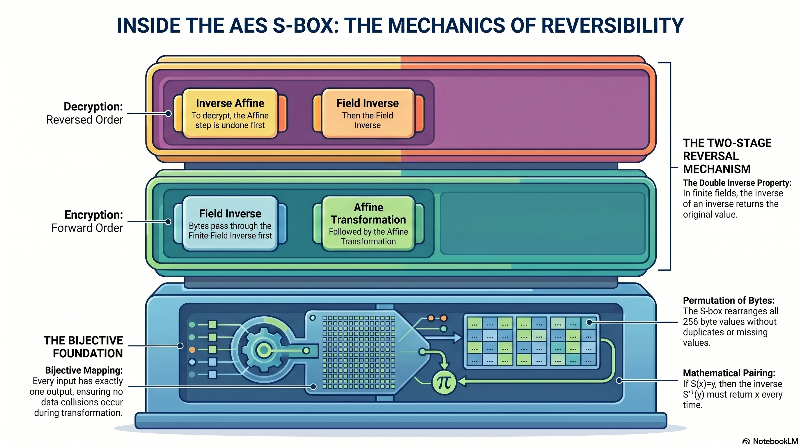

Learning objectives
- State why AES decryption requires the S-box to be reversible.
- Explain why both the field inverse and the affine transformation are individually invertible, making the full S-box invertible.
- Apply the rule \(S^{-1}(S(x))=x\) to verify round-trip recovery for any byte.
- Describe the order in which the inverse S-box undoes the two forward stages: inverse affine first, then field inverse again.
- Build a toy inverse S-box table by swapping the input-output pairs of the forward table.
- Identify when a substitution cannot be reversed, and explain why duplicate outputs make decryption ambiguous.
Why this tutorial exists
AES must decrypt as well as encrypt. That means the S-box cannot merely scramble bytes in a one-way fashion. It must be reversible. This tutorial explains why the AES S-box has an inverse and how the inverse S-box conceptually undoes the original S-box.
Reversibility is a matter of walking backward through the machine. If encryption applies the finite-field inverse and then an affine transformation, decryption must undo the affine transformation first and then undo the inverse step.
What you should know first
You should understand the AES S-box as a two-stage process: multiplicative inverse in \(\mathrm{GF}(2^8)\), followed by an affine transformation. You should also understand that a reversible function must map each input to a unique output.
Symbols used in this tutorial
The symbols look similar to earlier tutorials, but now we are focusing on reversing the direction.
| Symbol or notation | Friendly meaning | Technical meaning |
|---|---|---|
| \(S\) | The AES S-box function. | A bijective substitution function on bytes. |
| \(S^{-1}\) | The inverse S-box function. | The function that reverses the AES S-box mapping. |
| \(A\) | The affine transformation used in the S-box. | An invertible affine transformation over \(\mathrm{GF}(2)^8\). |
| \(A^{-1}\) | The inverse affine transformation. | The affine transformation that reverses \(A\). |
| \(a^{-1}\) | The finite-field inverse of byte \(a\). | The element satisfying \(a\cdot a^{-1}=1\) in \(\mathrm{GF}(2^8)\). |
| bijective | Every input has one output, and every output comes from one input. | One-to-one and onto. |
| permutation | A rearrangement with no duplicates and no missing values. | A bijection from a finite set to itself. |
The big picture
To reverse a sequence of operations, undo them in the opposite order. If putting on shoes then tying them gets you ready, undoing that process means untie first, remove shoes second. AES follows the same logic: undo affine first, then undo the field inverse step.
To reverse:
Why the AES S-box is reversible
The AES S-box is reversible because both of its stages are reversible:
- The finite-field inverse step is reversible on nonzero bytes, and AES handles
0x00specially in a consistent way. - The affine transformation is designed to be invertible.
A function is bijective when every input has exactly one output and every output has exactly one input. A bijective S-box can be reversed.
Since the AES S-box maps 256 input bytes to 256 output bytes without collisions, it is a permutation of all byte values.
The S-box as a permutation of bytes
The AES S-box rearranges the 256 possible byte values. It does not collapse two inputs into the same output. That is essential for decryption.
| Forward S-box | Meaning | Inverse S-box | Meaning |
|---|---|---|---|
| \(S(\texttt{0x00})=\texttt{0x63}\) | 0x00 maps to 0x63 | \(S^{-1}(\texttt{0x63})=\texttt{0x00}\) | 0x63 maps back to 0x00 |
| \(S(\texttt{0x53})=\texttt{0xED}\) | 0x53 maps to 0xED | \(S^{-1}(\texttt{0xED})=\texttt{0x53}\) | 0xED maps back to 0x53 |
| \(S(\texttt{0x7C})=\texttt{0x10}\) | 0x7C maps to 0x10 | \(S^{-1}(\texttt{0x10})=\texttt{0x7C}\) | 0x10 maps back to 0x7C |
Reverse order matters
Suppose the forward S-box is described as:
where \(A\) is the affine transformation. To reverse it, we must undo \(A\) first:
In a finite field, taking the multiplicative inverse is almost its own undoing: for nonzero \(a\), \((a^{-1})^{-1}=a\). The zero special case also maps back consistently: zero goes to zero in the inverse step.
What is the inverse affine transformation?
The affine transformation in the forward S-box has the form:
To undo it, AES uses another fixed affine transformation:
Because addition is XOR, adding the constant again is the same as subtracting it. In \(\mathrm{GF}(2)\), subtraction and addition are identical.
The affine step is a bit mixer with a constant. The inverse affine step is the matching un-mixer. It is not guessed; it is mathematically paired with the original affine transformation.
Worked example 1: reverse S-box(0x00) = 0x63
Forward direction:
0x000x000x630x63Reverse direction:
0x630x000x000x00Worked example 2: reverse S-box(0x53) = 0xED
From the previous tutorial:
To reverse it, start from 0xED:
| Direction | Step 1 | Step 2 | Result |
|---|---|---|---|
| Forward S-box | 0x53 → inverse → 0xCA | 0xCA → affine → 0xED | 0xED |
| Inverse S-box | 0xED → inverse affine → 0xCA | 0xCA → inverse → 0x53 | 0x53 |
The inverse step is its own undoing
For nonzero finite-field elements:
Example:
That does not mean the entire S-box is its own inverse. The affine transformation changes the full composition, so AES needs a separate inverse S-box table or inverse S-box procedure.
How an inverse S-box table is built
If you already have the forward S-box table, you can build the inverse table by swapping input-output relationships.
| Forward table says | Inverse table must say |
|---|---|
S[0x00] = 0x63 | InvS[0x63] = 0x00 |
S[0x53] = 0xED | InvS[0xED] = 0x53 |
S[0x7C] = 0x10 | InvS[0x10] = 0x7C |
The inverse table is not a second unrelated table. It is the forward table read backward.
Toy example: reversing a small S-box
Imagine a tiny 2-bit S-box:
| Input | Output |
|---|---|
| 00 | 10 |
| 01 | 11 |
| 10 | 01 |
| 11 | 00 |
The inverse table swaps each pair:
| Input to inverse S-box | Recovered original |
|---|---|
| 10 | 00 |
| 11 | 01 |
| 01 | 10 |
| 00 | 11 |
This small example shows the same principle used by AES: a reversible substitution can be undone by reversing the mapping.
Why collisions would break reversibility
Suppose two different inputs mapped to the same output:
Then, when decrypting, the inverse S-box would see \(y\) and would not know whether to return \(a\) or \(b\). Information would be lost.
A reversible S-box cannot have duplicate outputs. Every output must point back to exactly one input.
Interactive: Full S-box Anatomy
No black boxes. Enter any byte to see the complete machinery: both lookup tables, every bit of every transform, and exactly why the reverse path recovers the original. Every number is shown, every computation is open.
Common mistakes
To undo a composition, reverse the order. For the AES S-box, undo affine first, then undo the inverse step.
The finite-field inverse step is its own undoing, but the full AES S-box is not the same as the inverse S-box.
The inverse S-box is determined by the forward S-box. If the forward table says S[x] = y, the inverse table must say InvS[y] = x.
If two inputs share an output, the mapping cannot be reversed. AES avoids this by using a bijective S-box.
Practice problems
-
If \(S(\texttt{0x00})=\texttt{0x63}\), what is \(S^{-1}(\texttt{0x63})\)?
Show solution
\(S^{-1}(\texttt{0x63})=\texttt{0x00}\).
-
If \(S(\texttt{0x53})=\texttt{0xED}\), what is \(S^{-1}(\texttt{0xED})\)?
Show solution
\(S^{-1}(\texttt{0xED})=\texttt{0x53}\).
-
In the inverse S-box procedure, which step is undone first: the finite-field inverse or the affine transformation?
Show solution
The affine transformation is undone first.
-
Why would duplicate outputs make an S-box non-reversible?
Show solution
If two different inputs produced the same output, the inverse S-box would not know which original input to recover.
-
Is the AES S-box the same table as the inverse S-box?
Show solution
No. The inverse S-box reverses the mappings of the forward S-box, but it is not the same table.
Why this matters for cryptography
AES is a block cipher, so encryption must be reversible by someone who has the key. The S-box gives AES nonlinearity, but it must still preserve information so decryption can work.
- The S-box is nonlinear but reversible.
- The inverse S-box is used during AES decryption.
- Reversibility requires no duplicate outputs.
- The inverse S-box is the forward S-box mapping read backward.
- This illustrates a recurring cipher-design principle: confusion should scramble structure without destroying recoverable information.
One-page recap
- AES must decrypt, so its S-box must be reversible.
- The AES S-box is bijective: every input has one output, and every output has one input.
- The forward S-box applies field inverse, then affine transformation.
- The inverse S-box reverses this order: inverse affine, then field inverse again.
- If \(S(x)=y\), then \(S^{-1}(y)=x\).
S[0x00] = 0x63, soInvS[0x63] = 0x00.S[0x53] = 0xED, soInvS[0xED] = 0x53.- The inverse step is its own undoing for nonzero bytes, but the full S-box is not its own inverse.
- Duplicate outputs would make decryption ambiguous.
| Forward | Reverse |
|---|---|
0x00 → 0x63 | 0x63 → 0x00 |
0x53 → 0xED | 0xED → 0x53 |
0x7C → 0x10 | 0x10 → 0x7C |
Module Infographic
This visual overview captures the key ideas from this module. Save it or print it as a reference sheet.

What comes next
The next tutorial should be Linear Transformations and Matrices over \(\mathrm{GF}(2)\). That will make the affine transformation feel less mysterious and prepare us for MixColumns and other linear layers.